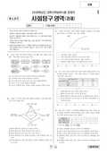

문제지


시험지를 먼저 풀어 보세요. 등급컷·표준점수·난이도는 흐리게 가려 뒀어요.
정답 변경 없음
이의신청 9문항 · 평가원 상세 답변 9문항
평가원 답변
윤리와 사상 교과서는 슈바이처 사상과 관련하여 생명중심 사상과 생태주의 사상을 소개하고 있습니다. 교과서에 의하면, “슈바이처는 인간 중심적인 생명관과 과학을 만능으로 생각하는 현대 사상이 인간을 타락시키고 있다고 지적하면서, 살아있는 모든 존재에 대한 사랑과 자비를 역설”하고(윤리와 사상, p.115), “살아있는 모든 생명에 대한 외경을 주장"(윤리와 사상, p. 122)하고 있습니다. 생태주의와 관련하여 교과서는 “과학 기술은 그 동안 인간의 삶에 풍요함과 편리함을 가져다주었지만 자연 환경을 파괴하였고 인간소외 현상을 낳았다."(윤리와 사상, p. 198), "생태주의는 자연계가 내재적 혹은 본질적인 가치를 갖고 있다는 철학적 전제에서 출발한다. 즉, 생태주의는 자연물들간의 관계, 무생물, 그리고 생태적 전체에도 직접적인 도덕적 지위를 부여하고 있다. 따라서 이제 우리는 인간이 지구와 우주의 중심이 아님을 인정하는 겸손함을 지녀야 하며, 인간이 만물의 지배자가 아닌 일부라는 사고방식을 가져야 한다."고 (윤리와 사상, p. 259)기술되어 있습니다. 이 문항의 제시문에서, 인간은 생명의 신비함을 과학적 계산과 사유로써 알 수 없으며 생명의지에 대한 직관으로 알 수 있다는 것을 “인간은 생명의 심오함에 사로잡히게 되며 생명들 안에 인간 자신이 있다는 것을 깨닫는다.”는 말에서 찾을 수 있습니다. 두 번째 제시문의 “인간은 살려고 하는 생명들 가운데서 살려고 하는 생명이며 생명에게 경의를 표하고 그것을 촉진하는 것이 선입니다”에서 생명의지에 대한 통찰을 통해 생명외경의 윤리를 갖게 된다는 것을 알 수 있습니다. 따라서 교과서에서 강조하고 있듯이, 과학과 인간중심적 사고로서는 생명을 알 수 없으며 그것과 다른 방법을 통해 생명에 대한 외경으로 나아가야 한다는 슈바이처의 주장은 제시문을 탐구하여 충분히 추론할 수 있으므로 이 문항은 교육과정의 범위를 넘지 않습니다.사회탐구 영역 : 윤리
평가원 답변
원칙적으로 수학능력 시험은 ‘탐구형’을 염두에 두고 있고, 윤리(전통윤리+윤리와 사상) 교육과정의 전 범위를 대상으로 하고 있습니다. 아울러 윤리 과목의 특성에 따라 문항 풀이에 어느 정도의 선지식이 요구됩니다. 본 문제는 ‘이이의 주장’을 지문 내용으로 제시하고, 그의 사상적 입장을 묻는 문항입니다. 이 문항은 ‘탐구형’ 수능의 특성에 따라, 그리고 수험생들이 도식적으로 잘못된 지식을 적용할 것을 방지하고 정답 도출의 단서를 제공하기 위하여 이이가 “경(敬)”을 주장하였다는 내용을 두 번째 제시문에 싣고 있습니다. 이이의 사상을 알 수 있는 자료를 첫 번째 자료로 제시하고 있고, 둘째 자료는 이이가 ‘경’을 주장한다는 것을 알려주는 것입니다. 더구나 ‘이이는 성(誠)을 강조한다’는 교과서의 진술(『윤리와 사상』,218쪽)은 이이와 이황이 성과 경 어느 하나를 절대적으로 취하고 있다는 것이 아니라 상대적으로 강조한 것을 나타낸 것일 뿐, 교과서 어디에서도 이분법적으로 서술하고 있지 않습니다. 따라서 ‘이이는 성(誠)만을 수양 방법으로 삼았다’거나 ‘이이는 경(敬)을 말하지 않았다’는 주장은 타당성이 없습니다. 그 동안의 출제된 문항도 이러한 맥락입니다. 또한 본 문항의 출제 근거인 『윤리와 사상』 및 『전통 윤리』의 서술 내용을 보면, “주자(朱子)는 우주의 존재 문제를 탐구하는 이기론(理氣論), 인간의 내면적 구조와 본질을 분석하는 심성론(心性論), 도덕을 실천하는 방법으로 제기한 거경궁리론(居敬窮理論), 정치와 사회 문제를 해결하기 위한 경세론(經世論) 등을 기본 사상으로 도덕의 기초가 되는 인륜의 이치에 대하여 형이상학적 체계를 갖추어 설명하였다.”(『윤리와 사상』, 82쪽) “유학에서는 인간이 효나 충 등의 덕목 실천, 성(誠)과 경(敬)을 통한 매일 매일의 도덕적 수련은 물론, 성현의 말씀을 배움으로써 자신의 욕망이나 감정을 극복하면 누구든지 이상적 인간이 될 수 있다고 주장한다.”(전통 윤리48쪽)와 같이 교과서 곳곳에서 유학자들이 성과 경을 함께 추구하였음을 알 수 있습니다<이 외에도 『전통윤리』70쪽 3줄~6줄, 78쪽 30줄~32줄, 88쪽 10줄~16줄, 89쪽 10줄~18줄, 90쪽 14줄~19줄, 102쪽 2줄~12줄 등을 참고할 수 있습니다>. 이러한 진술들을 종합하면, 본 문항이 교육과정에 위배되지 않음을 확인할 수 있습니다. 따라서 본 문항은 정답에 오류가 없으며, 교육과정의 범위를 넘어서지 않았습니다.
평가원 답변
해안 지역에서 바라본 한라산의 전경은 전체적으로 경사가 완만한 순상 화산입니다. 이런 이유로 본 문항에는 오류가 없습니다.사회탐구 영역 : 한국 지리
평가원 답변
답지 ②와 ③에서 말한 교통로는 발해가 통상적으로 활용한 공식 교통로로서, 사료상으로 신라도, 조공도(당으로 가는 교통로), 일본도, 영주도, 거란도가 확인됩니다. 이는 고등학교 국사 교과서의 142쪽 “남북국 시대의 무역로” 지도와 144쪽 서술에서 확인할 수 있습니다. (나)의 서경 압록부는 발해가 당나라와 외교 교섭 및 무역을 벌인 교통로의 경유지였습니다. 이 길을 따라 압록강 하구에 이르고 여기서는 해로를 이용하여 산둥반도에 상륙한 다음 발해관을 거쳐 육로로 당의 수도인 장안까지 갔습니다. 당나라가 발해관을 산둥반도에 설치한 것은 이 교통로를 이용하여 발해가 당나라와 공식적인 교섭과 무역을 진행했음을 보여줍니다. (다)의 남경 남해부는 신라로 가는 신라도의 경유지였습니다. 발해에서 일본으로 가는 일본도는 동경 용원부를 출발하여 지금의 러시아 포시에트만에서 출항한 후 동해를 가로질러 일본의 노토반도 쪽으로 이어지는 길입니다. 이는 각종 문헌기록과 고고학 발굴 자료를 통해서도 확인됩니다. 동해를 통해 발해와 일본 사이에 활발한 교류가 이뤄졌다는 것은 이를 두고 말하는 것이고, 통상적인 교통로도 이 길이었습니다. 답지 ③ “외교 및 무역이 이뤄졌다”는 통상적으로 활용된 공식 교통로에만 적용할 수 있습니다. 그러므로 남경 남해부를 거쳐 동해안을 따라가는 길은 발해의 대일본 교통로라고 할 수 없고, 이 길을 통해 외교와 무역이 수행된 사례도 찾을 수 없으므로 답지 ③은 틀린 진술입니다. 따라서 이 문항은 오류가 없습니다.
평가원 답변
본 문항에서는 “…생명 공학 연구를 금지하는 법률이 헌법상 허용될 수 있을까요?”라는 질문을 “…생명 공학 연구는 헌법상 허용될 수 있을까요?”로 잘못 읽지 않도록 해야 합니다. <보기> ㄴ은 인간의 배아를 이용하는 생명 공학 연구는 생명권을 침해하지 않는다는 뜻입니다. 그렇다면 생명권의 보호라는 관점에서 인간의 배아를 이용하는 생명 공학 연구를 법률로써 금지할 이유가 없습니다. 따라서 ㄴ 은 ‘을’이 제시할 수 있는 논거에 해당합니다. 그리고 <보기> ㄷ에서와 같이 인간의 배아를 이용하는 생명 공학 연구가 인간의 존엄과 가치를 침해한다면, 그러한 연구는 헌법상 허용되지 않으므로 생명 공학 연구를 금지하는 법률을 허용해야 합니다. 그러므로 ㄷ 은 ‘갑’이 제시할 수 있는 논거에 해당합니다. 따라서 이 문항은 오류가 없습니다.사회탐구 영역 : 법과 사회
이의 요지
따라서 이의 제기에 대한 문항 오류가 없습니다
평가원 답변
‘ㄴ’에서 위헌결정은 재판관 9명 중 6명 이상의 찬성을 요건으로 합니다. ㉠은 헌법불합치 결정으로 재판관 6명 이상의 찬성을 충족하였지만, ㉡은 심판 청구를 받아들이지 않는 기각 결정이므로 이 요건에 해당되지 않습니다. 따라서 이의 제기에 대한 문항 오류가 없습니다. ‘ㄹ’의 진술은 잘못된 것입니다. 헌법재판소의 헌법소원 심판 사례로서 기본권을 침해당한 국민은 헌법소원 심판을 청구할 수 있습니다. 따라서 이 문항은 오류가 없습니다.
평가원 답변
본 문항의 출제 의도는 유럽 절대주의의 성격을 정확하게 이해하고 있는가를 측정하는데 있습니다. 베르사유 궁전을 건립한 루이 14세는 서유럽 절대주의를 대표합니다. 서유럽 절대주의는 한편으로 초기 자본주의 발전에 힘입어 성장하고 있던 시민 계급과 다른 한편으로 이들과 대립하고 있던 전통적인 봉건 귀족 모두를 절대 군주의 지지 기반으로 만들면서 발전하였습니다. 특히 시민 계급과 절대 군주와의 관계는 상호 의존적이었습니다. 절대 군주는 중상주의 정책을 통해 시민 계급으로부터 재정적 지원을 받아 왕권을 강화시켰으며, 동시에 시민 계급은 왕실로부터 상공업 활동을 지원받거나, 왕의 관료로 편입되면서 정치 사회적으로 성장해갔습니다. 따라서 답지 ③의 추론은 이러한 역사적 사실과 모순이 됩니다.
답지 ②는 로코코 양식이 계몽주의의 영향을 받았다고 표현하지 않았습니다. 단지 로코코 양식과 계몽주의가 같은 시기(18세기)에 유행했던 예술 및 사상이었다고 진술하였을 뿐입니다. 그리고 상 수시 궁전을 건립한 프리드리히 2세가 계몽사상의 영향을 받았음은 잘 알려진 역사적 사실이며, 3종의 세계사 교과서는 모두 프리드리히 2세가 계몽사상의 영향을 받았다고 설명하였습니다.따라서 본 문항은 오류가 없습니다.
평가원 답변
본 문항은 ‘수도권’ 단원과 관련된 발표 계획서를 작성하는 문제입니다. 교외화는 인구뿐만 아니라 도시의 기능들이 주변 지역으로 확산되는 과정을 뜻하는 개념입니다. 도시의 인구와 기능이 확산되는 과정에서 주변 지역은 점차 농업적 토지이용에서 도시적 토지 이용으로 변화되어 갑니다. 그리고 침상 도시의 조사 내용은 맞습니다만, 개념이 틀렸습니다. 침상 도시는 중심 도시와 분리된 자족적 도시가 아니라 중심 도시로 통근하는 사람들을 위한 주거 기능만을 주로 담당하는 의존적인 도시입니다. 따라서 본 문항은 오류가 없습니다.
평가원 답변
A국의 생산가능곡선에 따르면 교역 전에 X재 1개를 더 생산하기 위해서는 Y재 1/2개를 포기해야 하고, Y재 1개를 더 생산하기 위해서는 X재 2개를 포기해야 합니다. 그런데 제시문의 조건에 의하면, 기존의 국제 시장에서는 X재와 Y재가 4:1로 교환되고 있다고 하였습니다. 따라서 A국이 국제 교역에 참여한다면, 자국의 생산 가능 곡선의 형태에 관계없이 X재 1개를 더 얻기 위해서는 Y재 1/4개를 포기해야 하고, Y재 1개를 더 얻기 위해서는 X재 4개를 포기해야 합니다. 이 경우 A국은 해외 시장에 비해 기회비용이 낮은 Y재 생산에 특화하여 생산하게 되며, 그때 Y재의 최대 생산량은 20개입니다.
<보기> ㄱ의 경우, 교역 전 (가)에서는 Y재 1개를 생산함에 따른 기회비용은 X재 2개이므로 A국이 Y재를 1개 더 소비하기 위해서 X재를 2개 덜 소비해야 합니다. 따라서 ㄱ은 옳습니다. <보기> ㄴ의 경우, A국이 교역을 한다면 특화 상품인 Y재만을 20개 생산하게 됩니다. 국제 시장에서 X재와 Y재의 교환 비율이 4:1이기 때문에, A국이 교역을 통해 X재 24개를 얻기 위해서는 국내에서 Y재 6개 소비를 포기해야 합니다. 따라서 <보기>ㄴ의 진술처럼 A국이 X재 24개를 소비하고자 할 때, A국 국민이 최대로 소비할 수 있는 Y재의 수량은 14개입니다. 그러므로 ㄴ은 옳습니다. <보기> ㄷ의 경우, A국이 Y재를 6개 소비하고자 한다면, 국내에서 소비하고 남은 Y재 14개는 국제 시장에서 X재 56개와 교환할 수 있습니다. 따라서 ㄷ은 옳지 않습니다. <보기>ㄹ의 경우, A국이 교역을 통해 X재 20개를 얻기 위해서는 Y재 5개의 국내 소비를 포기해야 합니다. 따라서 A국이 X재 20개를 소비하고자 할 때 최대로 소비할 수 있는 Y재의 수량은 15개로 교역 전 10개에 비해 늘어나게 되어 교역의 이익이 발생합니다. 따라서 ㄹ은 옳지 않습니다. 따라서 이 문항은 오류가 없습니다.
시험 전체 관련 보도 4건은 2008학년도 대학수학능력시험 회차 페이지에 모아 두었어요.
발행 기관: 한국교육과정평가원(KICE). 파일 위치: 이 사이트가 보관한 사본. 저작권은 발행 기관에 있습니다. 원본과 다르거나 게시 중단이 필요하면 연락처로 알려 주세요. 등급컷 출처 구분은 데이터 원칙에서 설명합니다.